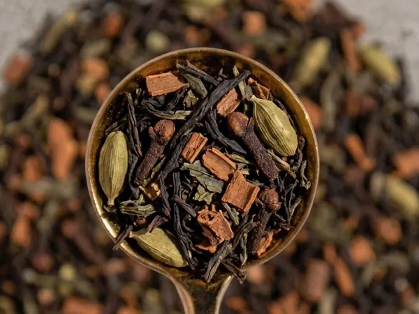
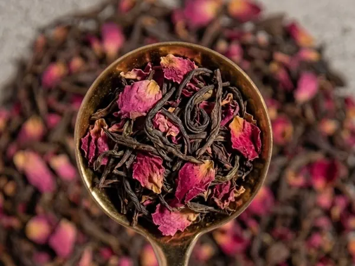
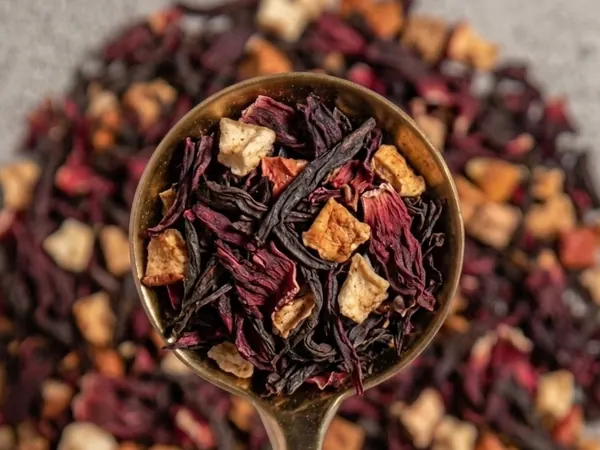
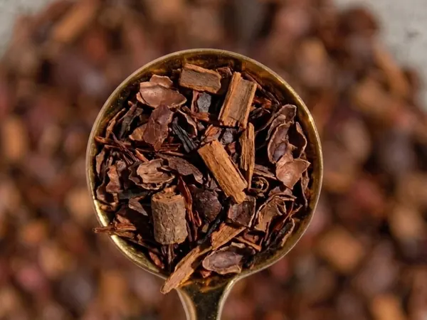
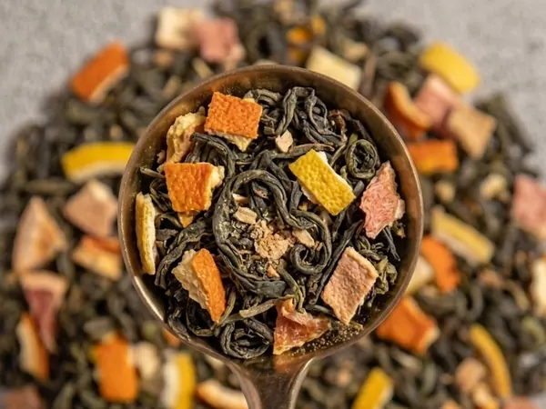
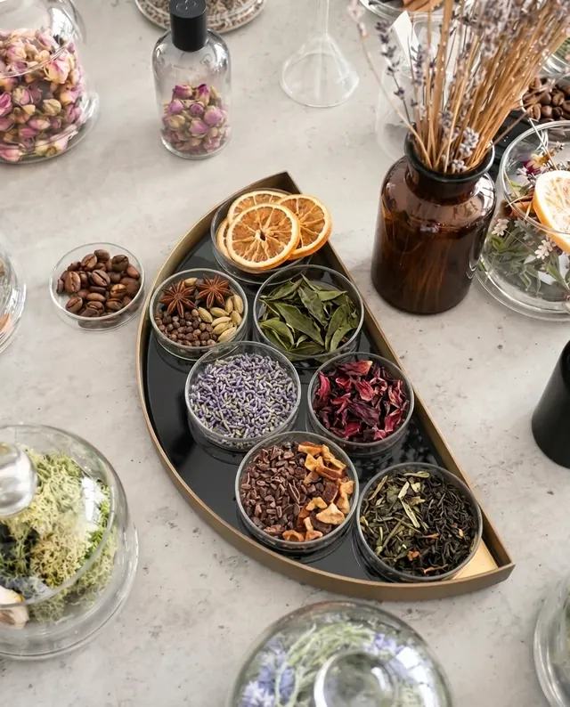
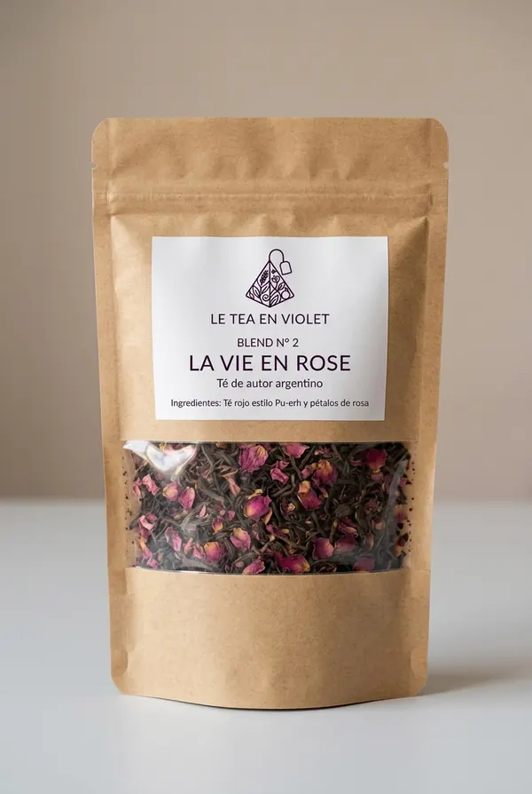

The Spicy Way To Be
Té verde, té negro chino en hebras, clavo de olor, cardamomo y canela. Intenso, especiado y profundamente aromático.
Consultar →Blends artesanales de autor
Tés en hebras sueltas, flores, frutas y especias reales. Mezclas creadas con intención para momentos que te pertenecen.
Conocer los blends →Blends destacados

Té verde, té negro chino en hebras, clavo de olor, cardamomo y canela. Intenso, especiado y profundamente aromático.
Consultar →
Hebras de té rojo estilo Pu-erh y pétalos de rosa. Terroso, delicado y de elegante presencia floral.
Consultar →
Hebras de té rojo, pétalos de hibiscus y trocitos de manzana. Frutal, dulce y de acidez vibrante.
Consultar →
Hebras de té rojo, cascarilla de cacao y canela. Notas profundas a chocolate amargo y calidez especiada.
Consultar →
Hojas de té verde, cáscaras de naranja, limón y pomelo, con jengibre en polvo. Cítrico, limpio y refrescante.
Consultar →
La maison · Nuestra filosofía
Seleccionamos ingredientes reales y trabajamos en pequeños lotes para preservar el carácter de cada hebra, cada flor y cada fruto. Tés que honran el origen, el tiempo y el ritual.

Preparado especialmente para vosBlend personalizado
Elegí obligatoriamente una base entre té verde, té negro o té rojo, y sumá hasta cinco ingredientes. Al terminar, enviá la combinación por WhatsApp para confirmar disponibilidad y realizar el encargo.
El ritual
Contacto
Escribinos para conocer disponibilidad, presentaciones y combinaciones personalizadas.
Hablar por WhatsApp →